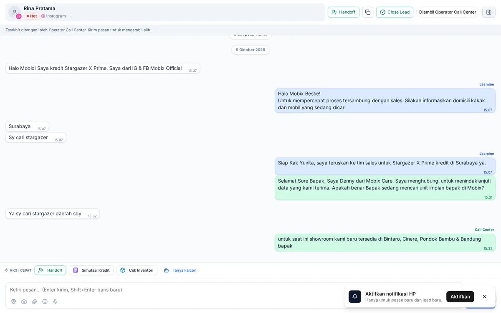
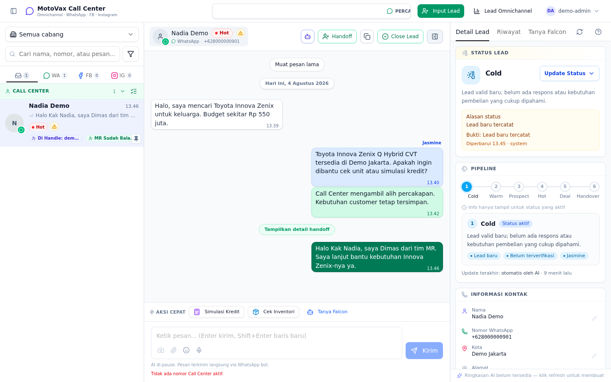
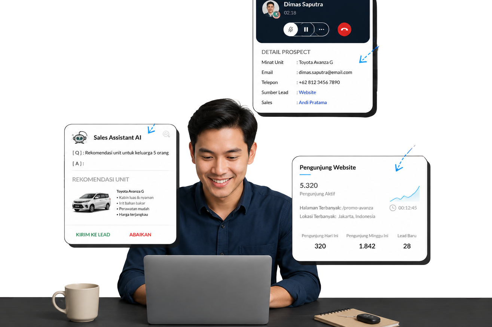
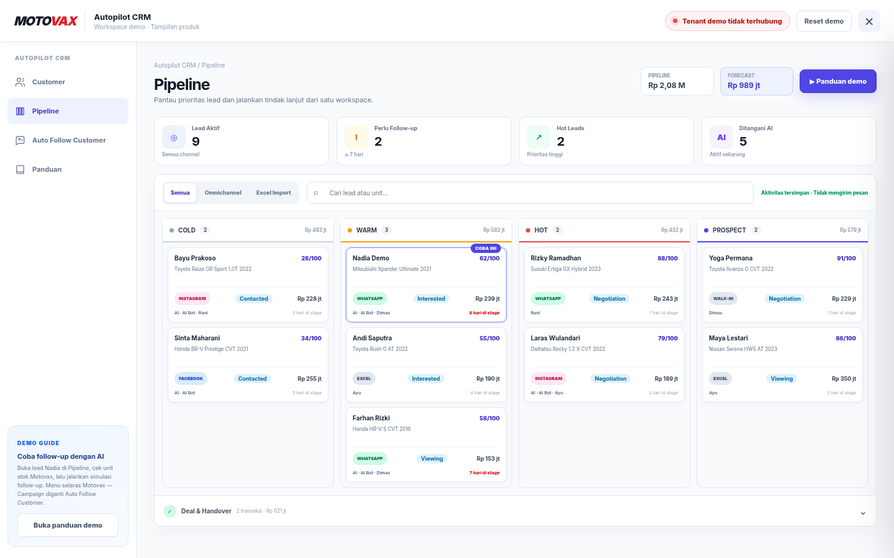
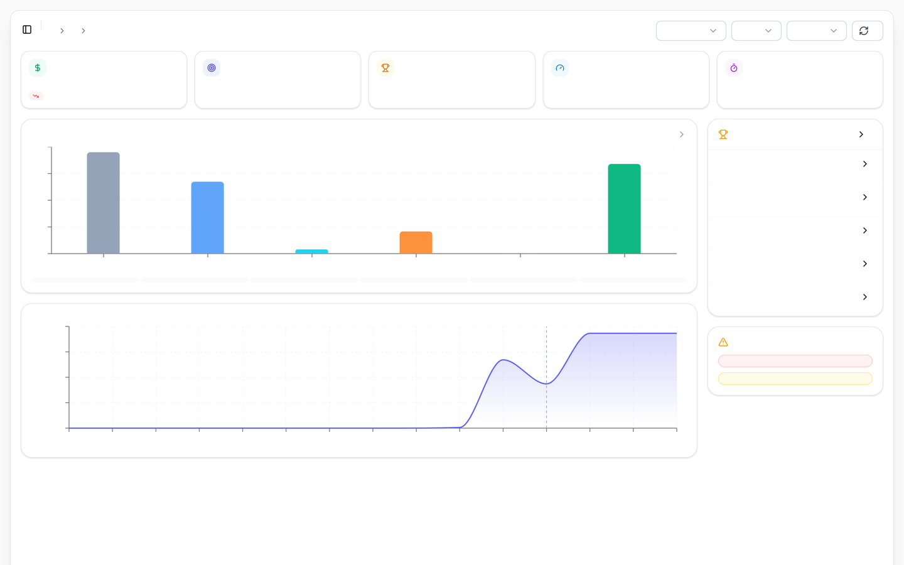

Lead Tercecer Lintas Kanal
WhatsApp sales pribadi, Instagram DM, Facebook Messenger, dan pameran ditangani di banyak HP. Tidak ada riwayat terpusat.
AI OMNICHANNEL DASHBOARD · AUTOMOTIVE
Platform AI Omnichannel untuk dealer mobil Indonesia — satukan percakapan pelanggan, data stok unit cabang, dan tim sales dalam satu workspace terpadu ala respond.io.
One Platform. One Data. Every Lead Connected.

01 / TANTANGAN DEALER
Masalahnya bukan kurangnya chat masuk. Masalahnya adalah tiap percakapan, kepastian stok, dan tindak lanjut berjalan terpisah-pisah.
WhatsApp sales pribadi, Instagram DM, Facebook Messenger, dan pameran ditangani di banyak HP. Tidak ada riwayat terpusat.
Saat customer menunggu balasan di malam hari atau jam sibuk, calon pembeli beralih ke dealer lain. Supervisor sulit memantau antrean.
Sales harus bolak-balik tanya ketersediaan unit ke grup internal, membuat penawaran lambat dan risiko unit ganda terjual.
Dampak Nyata: Tanpa satu sistem bersama, dealer kehilangan momentum closing dan kesulitan mengontrol performa tim sales.
02 / SOLUSI MOTOVAX
Satu dashboard omnichannel terpadu yang menggabungkan seluruh pesan, kecerdasan buatan, dan data operasional showroom mobil.
Kekuatan Motovax: Menghadirkan kapabilitas respond.io dengan deep domain otomotif Indonesia.
03 / KANAL & DEPLOYMENT
Hadir di seluruh titik interaksi marketing dan komunikasi tanpa membuat tim sales repot membuka lima aplikasi berbeda.
Terhubung via WhatsApp Cloud API resmi Meta dan sesi Web untuk menangani volume percakapan tinggi dengan verifikasi centang hijau.
Sambungkan DM Instagram, komentar interaktif, TikTok, dan iklan Click-to-WhatsApp (CTWA) Meta Ads langsung ke inbox otomatis.
Pasang widget chat interaktif di website dealer Anda; pengunjung website langsung disapa AI Jasmine dan dikonversi menjadi lead.
Prinsip Omnichannel: Calon pembeli tidak dipaksa pindah aplikasi; dealer yang menyatukan alur tanggapannya di satu tempat.
04 / KOLABORASI MANUSIA & AI
AI menangani tanya-jawab berulang; operator mengambil alih negosiasi bernilai tinggi dengan satu klik tanpa memutus alur percakapan.
Filosofi Kerja: AI meningkatkan kecepatan layanan; manusia memimpin closing dan hubungan personal.
05 / FALCON AI ENGINE · CORE DIFFERENTIATOR
Superpower Motovax terletak pada Falcon — engine kecerdasan yang menghubungkan bahasa alami dengan MIS dan Knowledge Management dealer.
Diferensiasi Falcon: Bukan sekadar model bahasa generik, melainkan sistem MIS & intelijen operasional otomotif.

06 / EKOSISTEM MULTI-AGENT
Motovax melengkapi dealer dengan regu AI Agent mandiri yang masing-masing memiliki peran operasional terarah.
Merespons chat 24/7, menyapa calon pembeli, mengumpulkan data awal, dan mengarahkan percakapan menuju kualifikasi unit.
Menghitung simulasi kredit, estimasi cicilan per bulan, rincian DP, dan tenor leasing secara akurat berdasarkan parameter leasing dealer.
Iris menyiapkan materi promosi dan memburamkan plat nomor otomatis. Ana menganalisis performa sales, antrean chat, dan konversi closing.
Sinergi Agen: Semua agen berbagi konteks data yang sama melalui fondasi Falcon MIS Engine.
07 / INVENTORI MULTI-CABANG
Hubungkan ketersediaan fisik mobil di showroom cabang langsung ke dalam obrolan percakapan dengan calon pembeli.
Dampak Sales: Tidak ada lagi salah janji stok kepada pelanggan; kepastian unit terbangun dalam hitungan detik.

08 / CRM & PIPELINE PENJUALAN
Lead tidak berhenti saat obrolan chat usai. Motovax mengawal alur prospek masuk hingga penyerahan kunci mobil ke pelanggan.
Tata Kelola Disiplin: Supervisor memiliki visibilitas penuh terhadap progres setiap peluang penjualan.

09 / ANALITIK OPERASIONAL & SLA
Manajemen (Owner, GM, dan Kepala Cabang) membutuhkan visibilitas berbasis data objektif, bukan laporan verbal.
Keputusan Manajemen: Alokasikan anggaran marketing dan evaluasi kinerja tim berdasarkan bukti analitik nyata.

10 / KEAMANAN & SKALABILITAS ENTERPRISE
Arsitektur dirancang khusus untuk grup dealer otomotif besar dengan kebutuhan tata kelola dan privasi yang ketat.
Database, alur kerja, dan katalog unit terisolasi aman antar-organisasi. Pengaturan grup dealer mendukung struktur cabang mandiri.
Hak akses berjenjang untuk Owner, Kepala Cabang, Supervisor, Call Center Agent, hingga Sales Lapangan menjaga keamanan data sensitif.
Integrasi WhatsApp Business API resmi Meta menjamin nomor dealer aman dari risiko pemblokiran (banned) saat pengiriman broadcast masif.
Standar Keamanan: Skalabilitas tinggi tanpa mengorbankan privasi data pelanggan dan kerahasiaan operasional dealer.
11 / LANGKAH SELANJUTNYA
Jadwalkan sesi demonstrasi langsung bersama tim Motovax. Kami akan simulasikan alur kerja omnichannel, AI Falcon, dan live stok unit menggunakan use-case nyata dealer Anda.
Catatan Implementasi: Fitur dan integrasi diselaraskan dengan arsitektur produksi motovax-app & live Mobix.
Akses modul CRM, AI Agents, dan WhatsApp API mengikuti paket dan konfigurasi tenant dealer.